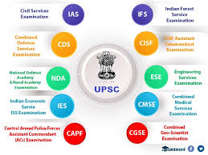

The Union Public Service Commission, commonly abbreviated as UPSC, is India's premier central recruiting agency. It is responsible for appointments to and examinations for All India services and group A & group B of Central services. While Department of Personnel and Training is the central personnel agency in India.The agency's charter is granted by Part XIV of the Constitution of India, titled as Services Under the Union and the States.[2][3] The commission is mandated by the Constitution for appointments to the services of the Union and All India Services.
It is also required to be consulted by the Government in matters relating to the appointment, transfer, promotion and disciplinary matters. The commission reports directly to the President and can advise the Government through him. Although, such advice is not binding on the Government. Being a constitutional authority, UPSC is amongst the few institutions which function with both autonomy and freedom, along with the country’s higher judiciary and lately the Election Commission.[4]